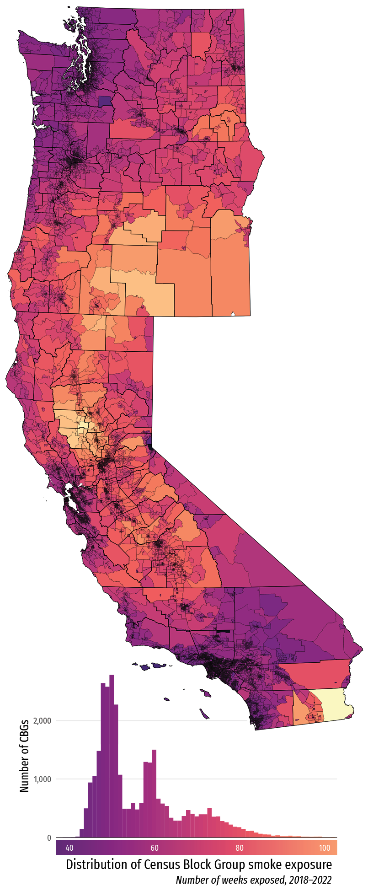
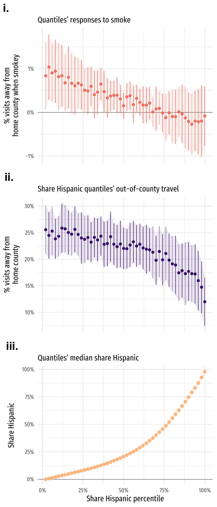

Ed Rubin: Research
Published
Publications
The economic impact of critical-habitat designation: Evidence from vacant-land transactions
Maximilian Auffhammer, Maya Duru, Edward Rubin, and David L. Sunding
The Endangered Species Act (ESA) requires the federal government to designate critical habitat for species listed as threatened or endangered. This provision of the ESA has proven to be one of its most controversial, as critical-habitat land designation entails special management—and potentially greater regulation. In this paper we measure the economic impact of critical-habitat designation by estimating its effect on the market value of vacant land. Using data from over 13,000 vacant-land transactions that occurred within or near critical habitat for two important species in California (red-legged frog and Bay checkerspot butterfly), we show that critical-habitat designation resulted in a large and statistically significant decrease in land value. The estimated impact of critical-habitat designation is heterogeneous: the largest decreases occur within designated urban-growth boundaries.
Maximilian Auffhammer, Maya Duru, Edward Rubin, and David L. Sunding. 2020. Land Economics, 96(2), 188–206. DOI: 10.3368/le.96.2.188

Bringing Satellite-Based Air-Quality Estimates Down to Earth
Meredith Fowlie, Edward Rubin, and Reed Walker
We use state-of-the-art, satellite-based PM2.5 estimates to assess the extent to which the EPA’s existing, monitor-based measurements over- or under-estimate true exposure to PM2.5 pollution. Treating satellite-based estimates as truth implies a substantial number of “policy errors”—over-regulating areas that comply with air quality standards and under-regulating other areas that appear to violate standards. We investigate the health implications of these apparent errors and highlight the importance of accounting for prediction error in satellite-based estimates. Uncertainty in “policy errors” increases substantially when we account for these underlying prediction errors.
Published (P&P) version | NBER Working Paper No. 25560 | EI @ Haas Working Paper 300
Fowlie, Meredith, Edward Rubin, and Reed Walker. 2019. “Bringing Satellite-Based Air Quality Estimates Down to Earth.” AEA Papers and Proceedings, 109: 283-88. DOI: 10.1257/pandp.20191064

Ongoing projects
Working Papers
Quantifying heterogeneity in the price elasticity of residential natural gas
with Maximilian Auffhammer
Conditionally accepted, JAERE
We exploit a spatial discontinuity in two natural gas utilities’ service territory—combined with variation in their block-rate pricing structure and a difference in how prima facie determined wholesale prices are deferentially passed though to consumers—to identify average, seasonal, and income-specific own-price elasticities of residential natural gas demand. We estimate an average elasticity ranging from 0.15–0.19 depending on the measure of price used. We further estimate that this elasticity varies substantially across seasons, income groups, and their interaction. We find no significant difference in consumers’ responses to average versus marginal prices.
Previous titles: Decomposing “the” elasticity of demand: Empirical and policy insights from 300 million natural gas bills; Natural gas price elasticities and optimal cost recovery under consumer heterogeneity: Evidence from 300 million natural gas bills; Summertime, and pass-through is easier: Chasing down price elasticities for residential natural
NBER Working Paper No. 24295 | EI @ Haas Working Paper 287
Draft | slides | map: service and study area | map: PRISM mean temperature | map: US natural gas pipeline
Press coverage: The Economist

What’s missing in environmental (self-)monitoring: Evidence from strategic shutdowns of pollution monitors
with Yingfei Mu and Eric Zou
Revise and resubmit, RESTAT
Tolerance for gaps in compliance (self-)monitoring data may induce strategic timing in local agents’ monitoring activity. This paper builds a framework to detect whether local governments skip air pollution monitoring when they expect air quality to deteriorate. We infer this expectation from air quality alerts—public advisories based on local governments’ own pollution forecasts—and test whether monitors’ sampling rates fall when these alerts occur. We first use this method to test an individual pollution monitor in Jersey City, NJ, suspected of a deliberate shutdown during the 2013 “Bridgegate” traffic jam. Consistent with strategic shutdowns, this monitor’s sampling rate drops by 33% on pollution-alert days. Building on large-scale inference tools, we then apply the method to test over 1,300 monitors across the U.S., finding 14 metro areas with clusters of monitors showing similar strategic behavior. We discuss imputation methods and policy responses that may help deter future strategic monitoring.


Downwind and out: The strategic dispersion of power plants and their pollution
with John Morehouse
Revise and resubmit, JAERE
US environmental policy cedes substantial authority to local agencies—creating potentials for polluters/governments to strategically export emissions. We identify such strategies among coal-fueled power plants. First, we document that electricity generators locate near administrative borders. As water influences borders/siting, we develop a simple, non-parametric test that shows coal plants located to reduce downwind exposure. Natural-gas plants—facing lower regulatory pressure—do not exhibit this behavior. Using a state-of-the-art, particle-trajectory model, we illustrate coal pollution’s extreme mobility: within 6 hours, 50% of coal plants’ emissions leave their source states—99% depart source counties. These strategic responses emphasize the importance of federal oversight and transport-focused regulation.

What can we machine learn (too much of) in 2SLS? Insights from a bias decomposition and simulation
with Connor Lennon and Glen Waddell
Machine learning (ML) primarily evolved to solve “prediction problems.” The first stage of two-stage least squares (2SLS) is a prediction problem—suggesting gains from utilizing ML in 2SLS’s first stage. However, little guidance exists on when ML helps 2SLS—or when it hurts. We investigate the implications of inserting ML into 2SLS, decomposing the bias into three informative components. Mechanically, ML-in-2SLS procedures face issues common to prediction and causal-inference settings—and their interaction. Through simulation, we show linear ML methods (e.g., post-Lasso) work “well,” while nonlinear methods (e.g., random forests, neural nets) generate substantial bias in second-stage estimates—some exceeding the bias of endogenous OLS.
Unequal avoidance: Disparities in smoke-induced out-migration
with M. Steven Holloway
Organisms reduce risk exposure through short-term avoidance—flight. However, this flight strategy may not be equally accessible throughout a population. We combine cellphone movements, satellite-based wildfire smoke plumes, and Census data to document substantial heterogeneity/inequity in communities’ tendencies to out-migrate to avoid smoke. Higher-income and whiter populations travel out of their counties at significantly higher rates during smoke events. These results suggest that the same populations who face social and environmental injustice on many other measures are less able to avoid wildfire smoke—underscoring equity concerns for wildfire damages and climate adaptation.
 
Customer Discrimination in the Workplace: Evidence from Online Sales
with Erin Kelley, Gregory Lane, and Matthew Pecenco
Many workers are evaluated on their ability to engage with customers. This paper measures the impact of gender-based customer discrimination on the productivity of online sales agents working across Sub-Saharan Africa. Using a novel framework that randomly varies the gender of names presented to customers without changing worker behavior, we find that the assignment of a female-sounding name leads to 50 percent fewer purchases by customers. The results appear to be driven by relatively lower interest in engaging with female workers. Since worker productivity informs firm hiring, pay, and promotion decisions, these results are important for understanding the persistence of identity-based discrimination in the labor market.
Becker Friedman Institute Working Paper No. 2023-25 | World Bank Policy Research Working Paper No. 10228 | Draft
When we change the clock, does the clock change us?
with Patrick Baylis and Severin Borenstein
The practice of standardizing the designation of time is a central device for coordinating activities and economic behaviors across individuals. However, there is nearly always a tension between an individual coordinating activities and carrying out those activities at their own preferred time. When time is standardized across large geographic areas, that tension is enhanced, because norms about the “clock times” of activities conflict with local environmental conditions created by natural or “solar” time. We study this tension by examining how geographic and temporal variation in solar time within time zones affects the timing of a range of common behaviors in the United States. Specifically, we estimate the degree to which people shift their online behavior (through Twitter), their commute (using the Census), and there visits to businesses and other establishments (using foot traffic data). We find that, on average, a one hour shift in the differential between solar time and clock time—approximately the width of a time zone—leads to shifting behavior by between 10 and 20 minutes. This shows that while adapting to local environmental factors significantly offsets the differential between solar time and clock time, the behavioral nudge and coordination value of clock time has the larger influence on activity. We also study how the trade-off differs across activities and population demographics.
Blog: Does Anybody Really Care What Time It Is?
Are our hopes too high? Testing cannabis legalization’s potential to reduce criminalization
new draft in preparation | slides | US legalization map | timeline | time series drug offenses
Do aerially applied pesticides affect local air quality? Empirical evidence from California’s San Joaquin Valley
Many policymakers, public-health advocates, and citizen groups question whether current pesticide regulations properly equate the marginal social costs of pesticide applications to their marginal social benefits—with particular concern for negative health effects stemming from pesticide exposure. Additionally, recent research and policies in public health, epidemiology, and economics emphasize how fine particulate matter (PM2.5) concentrations harm humans through increased mortality, morbidity, mental health issues, and a host of socioeconomic outcomes. This paper presents the first empirical evidence that aerially applied pesticides increase local PM2.5 concentrations. To causally estimate this effect, I combine the universe of aerial pesticide applications in the five southern counties of California’s San Joaquin Valley (1.8M reports) with the U.S. EPA’s PM2.5 monitoring network—exploiting (1) spatiotemporal variation in aerial pesticide applications and (2) variation in local wind patterns. I find significant evidence that (upwind) aerial pesticide applications within 1.5km increase local PM2.5 concentrations. The magnitudes of the point estimates suggest that the top decile of aerial applications may sufficiently increase local PM2.5 to warrant concern for human health.
new draft in preparation
In Progress
Declining power-plant emissions, co-benefits, and regulatory rebound
with Meredith Fowlie and Catherine Wright
Perinatal health effects of herbicides: Glyphosate, Roundup, and the rollout of GM crops
with Emmett Saulnier
Interactions between measurement error and policy
Mismeasurement in exposure and access: Insights from cellphone data
How salient are environmental risks? The short- and long-run effects of lead exposure in piped water
Books
Books
Data Science for Public Policy
with Jeffrey Chen and Gary Cornwall
This textbook presents the essential tools and core concepts of data science to public officials, policy analysts, and economists among others in order to further their application in the public sector. An expansion of the quantitative economics frameworks presented in policy and business schools, this book emphasizes the process of asking relevant questions to inform public policy. Its techniques and approaches emphasize data-driven practices, beginning with the basic programming paradigms that occupy the majority of an analyst’s time and advancing to the practical applications of statistical learning and machine learning. The text considers two divergent, competing perspectives to support its applications, incorporating techniques from both causal inference and prediction. Additionally, the book includes open-sourced data as well as live code, written in R and presented in notebook form, which readers can use and modify to practice working with data.
Presentations
Power Plants, Air Pollution, and Regulatory Rebound
EPIC Junior Workshop (University of Chicago), April 2023
Declining power-plant emissions, co-benefits, and regulatory
rebound
University of Nebraska–Lincoln, November 2022
What’s missing in environmental (self-)monitoring? Evidence
from strategic shutdowns of pollution monitors
Annual
Conference of the European Association of Environmental and Resource
Economists, June 2022
Declining power-plant emissions, co-benefits, and regulatory
rebound
Oregon State University, May 2022
Power Plants, Air Pollution, and Regulatory Rebound
National Graduate Institute for Policy Studies (GRIPS), April 2022
Power Plants, Air Pollution, and Regulatory Rebound
UC Berkeley ARE, April 2022
What’s missing in environmental (self-)monitoring? Evidence
from strategic shutdowns of pollution monitors
CU
Environmental & Resource Economics Workshop, October 2021
Pollution co-benefits and regulatory rebound
RFF/EPA, October 2021
What’s missing in environmental (self-)monitoring? Evidence
from strategic shutdowns of pollution monitors
AERE Remote
Conference, June 2021
Downwind and out: The Strategic dispersion of power plants
and their pollution
AERE Remote Conference, June 2021
A retrospective analysis of indirect air-quality benefits
from power-sector emissions reductions
RFF/EPA (Online),
December 2020
Estimating and decomposing ‘the’ elasticity of demand:
Empirical and policy insights from 600 million natural gas
bills
Duke Energy Data Analytics Symposium (Online),
December 2020
Mismeasurement in exposure and access: Insights from
cellphone data
AERE Remote Conference, June 2020
Declining power-plant emissions, co-benefits, and regulatory
rebound
ASSA (San Diego), January 2020
Mismeasurement in exposure and access: Insights from
cellphone data
Western Economic Association Annual
Conference, June 2019
The economic impact of critical-habitat designation: Evidence
from vacant-land transactions
The Occasional Workshop
(UCSB), November 2018
Natural gas elasticities and optimal cost recovery under
heterogeneity: Evidence from 300 million natural gas bills in
California
World Congress of Environmental Economics
(WCERE), June 2018
Is “Michelle” less productive than “Michael”? A field
experiment on consumer-based gender discrimination in the
marketplace
UC Berkeley, Computational Text Analysis
Working Group, April 2018
Natural gas elasticities and optimal cost recovery under
heterogeneity: Evidence from 300 million natural gas bills in
California
University of Oregon, Economics, February 2018
Is “Michelle” less productive than “Michael”? A field
experiment on consumer-based gender discrimination in the
marketplace
IGC-PEDL Workshop at Oxford, December 2017
Natural gas elasticities and optimal cost recovery under
heterogeneity: Evidence from 300 million natural gas bills in
California
Heartland Environmental and Resource Economics
Workshop, September 2017
Is “Michelle” less productive than “Michael”? A field
experiment on consumer-based gender discrimination in the
marketplace
Berkeley Development Economics Lunch,
September 2017
Natural gas elasticities and optimal cost recovery under
heterogeneity: Evidence from 300 million natural gas bills in
California
Camp Resources, August 2017
Natural gas elasticities and optimal cost recovery under
heterogeneity: Evidence from 300 million natural gas bills in
California
AAEA Annual Meeting, August 2017
Do marijuana stores increase or reduce neighborhood crime?
Evidence from Denver, Colorado
UC Berkeley, Summer
Research Seminar, July 2017
Natural gas elasticities and optimal cost recovery under
heterogeneity: Evidence from 300 million natural gas bills in
California
AERE Annual Summer Conference, June 2017
Summertime, and pass-through is easier: Chasing down price
elasticities for residential natural gas demand in 275 million
bills
22nd Annual POWER Conference on Energy Research and
Policy, March 2017
Natural gas elasticities, seasonal heterogeneity, and
consumer behavior: Evidence from 300M+ bills
UC Berkeley,
Environmental and Resource Economics Seminar, November 2016
(Mile-) High Quandaries: Evidence from Denver that Marijuana
Legalization May Increase Drug Arrests
UC Berkeley,
Environmental and Resource Economics Seminar, April 2015
Irrigation and Climatic Effects on Water Levels in the U.S.
High Plains Aquifer Along the 41st Parallel in Nebraska (and Several
Questions about Model Complexity)
University of
Nebraska-Lincoln, Statistics Departmental Seminar, March 2013
Irrigation and Climatic Effects on Water Levels in the U.S.
High Plains Aquifer
International Conference of
Agricultural Economists, poster, August 2012
Reproductive Ecology of Western Painted Turtles (Chrysemys
picta)
Midwest Fish and Wildlife Conference, poster,
December 2006
R scripts
Run R code in terminal without entering R or saving a script. (The
-e option evaluates the given R expression.)
Rscript -e 'set.seed(12345); x <- rnorm(1e3); mean(x)'
Rscript -e 'rmarkdown::render_site("research.Rmd")'Create a nice timeline (shown below) in R’s ggplot2.
## Warning: Using `size` aesthetic for lines was deprecated in ggplot2 3.4.0.
## ℹ Please use `linewidth` instead.
## This warning is displayed once every 8 hours.
## Call `lifecycle::last_lifecycle_warnings()` to see where this warning was generated.
# Setup ----
# Packages
library(ggplot2)
# Define colors (from https://www.materialpalette.com)
dark_primary_color <- "#C2185B"
primary_color <- "#E91E63"
light_primary_color <- "#F8BBD0"
text_primary_color <- "#FFFFFF"
accent_color <- "#9E9E9E"
primary_text_color <- "#212121"
secondary_text_color <- "#757575"
divider_color <- "#BDBDBD"
# Plot the timeline ----
ggplot() +
# Two rectangles
geom_rect(aes(xmin = 2009, xmax = 2011+4/12, ymin = 0, ymax = 0.35),
fill = divider_color) +
geom_rect(aes(xmin = 2011+4/12, xmax = 2014, ymin = 0, ymax = 0.35),
fill = light_primary_color) +
geom_rect(aes(xmin = 2014, xmax = 2017, ymin = 0, ymax = 0.35),
fill = primary_color) +
# Label rectangles (periods)
annotate(geom = "text", x = 2010, y = -0.15, label = "Period A",
color = divider_color) +
annotate(geom = "text", x = 2015.5, y = -0.15, label = "Period B",
color = primary_color) +
# Add ellipses
annotate(geom = "point", x = seq(2009-0.15, 2009-0.45, -0.15), y = 0.175,
size = 1.5, color = divider_color) +
annotate(geom = "point", x = seq(2017+0.15, 2017+0.45, 0.15), y = 0.175,
size = 1.5, color = primary_color) +
# Time axis
geom_hline(yintercept = 0, size = 1, color = primary_text_color) +
# Label time
annotate(geom = "text", x = 2009:2017, y = -0.05, label = 2009:2017,
size = 4, color = secondary_text_color) +
# Points for events
annotate(geom = "point", x = c(2011+4/12, 2012+7/12, 2014), y = 0,
size = 4, color = primary_text_color) +
# Label events:
# First event
annotate(geom = "text", x = 2011+4/12+0.15, y = 0.9, hjust = 0,
label = "An event triggers a change", color = primary_text_color) +
geom_segment(aes(x = 2011+4/12, xend = 2011+4/12,
y = 0, yend = 0.9), color = primary_text_color) +
geom_segment(aes(x = 2011+4/12, xend = 2011+4/12+0.1,
y = 0.9, yend = 0.9), color = primary_text_color) +
# Intermediate event
annotate(geom = "text", x = 2012+7/12+0.15, y = 0.7, hjust = 0,
label = "A relevant intermediate event", color = primary_text_color) +
geom_segment(aes(x = 2012+7/12, xend = 2012+7/12,
y = 0, yend = 0.7), color = primary_text_color) +
geom_segment(aes(x = 2012+7/12, xend = 2012+7/12+0.1,
y = 0.7, yend = 0.7), color = primary_text_color) +
# Period B begins
annotate(geom = "text", x = 2014+0.15, y = 0.5, hjust = 0,
label = "The new period officially begins", color = primary_text_color) +
geom_segment(aes(x = 2014, xend = 2014,
y = 0, yend = 0.5), color = primary_text_color) +
geom_segment(aes(x = 2014, xend = 2014+0.1,
y = 0.5, yend = 0.5), color = primary_text_color) +
# Theme stuff
theme_bw() +
ylim(c(-0.15,1)) +
theme(axis.text = element_blank(), axis.title = element_blank(),
axis.ticks = element_blank(), panel.grid = element_blank(),
panel.border = element_blank())
{kind=link}
Bash
List files (recursively) by size
Lists all files in a directory (here
.), sorts from largest to smallest, and displays top
20 (largest).
Hat tip: StackExchange
Git
Remove a file (your.file) from Git’s cache
Begin tracking a file extension (.eg) with Git’s Large File Storage (LFS) and
check the .gitattributes file for success.
Check which files LFS currently tracks.
Pandoc
Convert a Markdown (.txt) file to Word
(.docx).
Convert a Markdown (.txt) file to PDF
(.pdf).
Renaming
Place a “1” between the first four characters and the subsequent characters in each filename in a folder.
Sleeping and shutdown
Tell the computer to wait a bit and then go to sleep.
Tell the computer to shutdown now.
Shut it down at a specific time (here: 2:30pm on 01 January 2016)
Shut it down after a specified amount of time (here: 30 minutes)
Miscellany
OSX: Show only active apps in the terminal. h/t
Kill all processes named “rsession”.
Re-index the Spotlight utility.
Linux code for playing hide and seek.
Warning You might
not want HAL to find you.